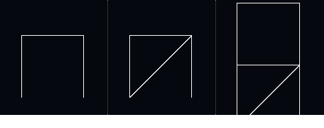
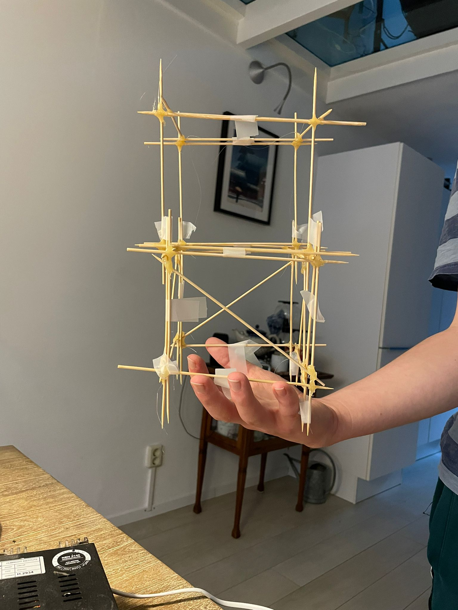
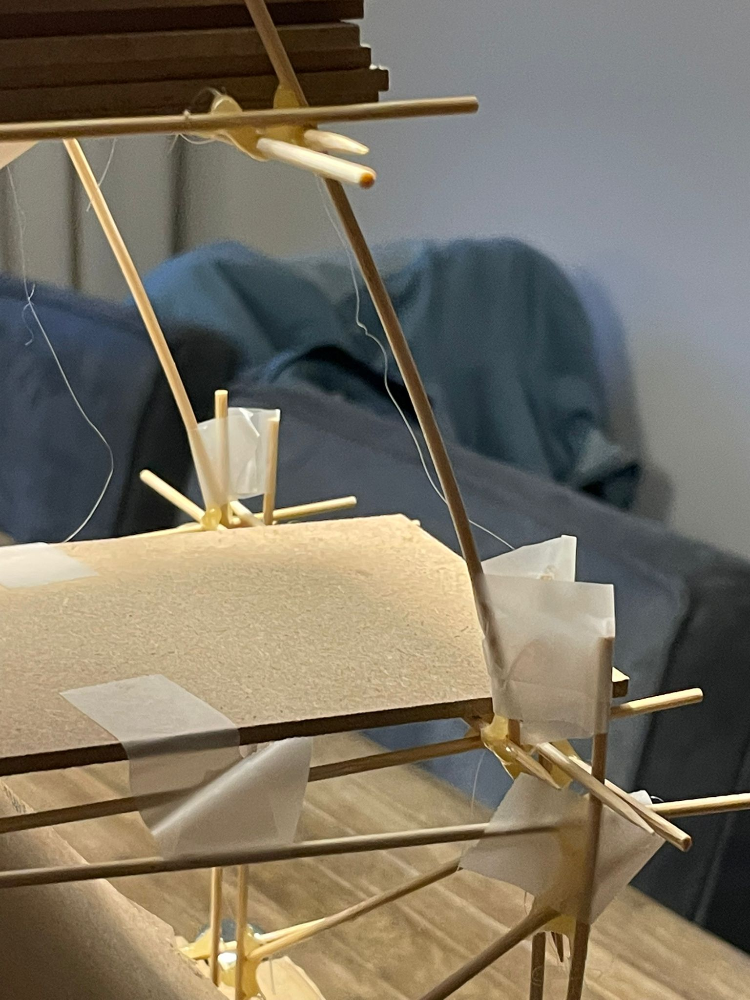
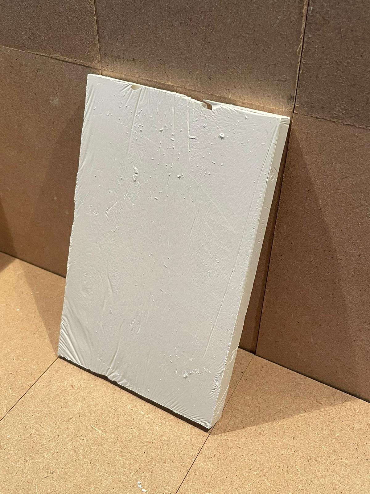
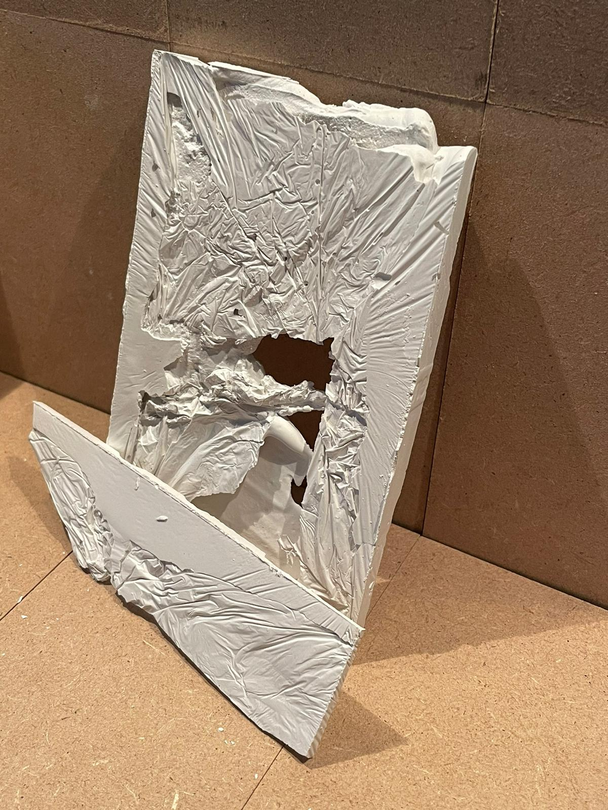
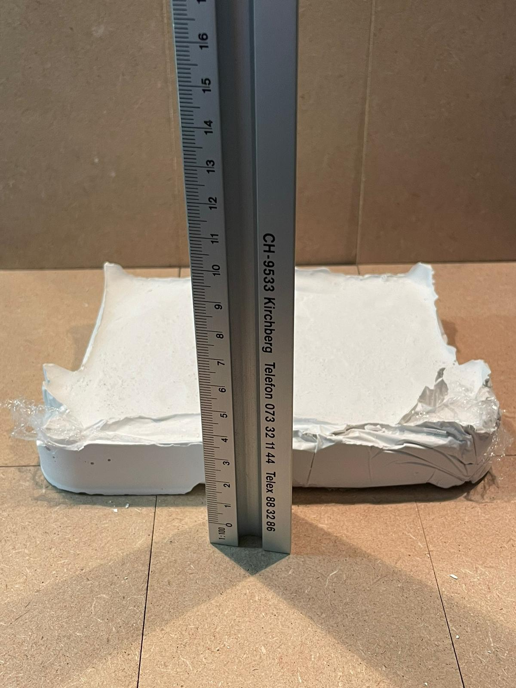
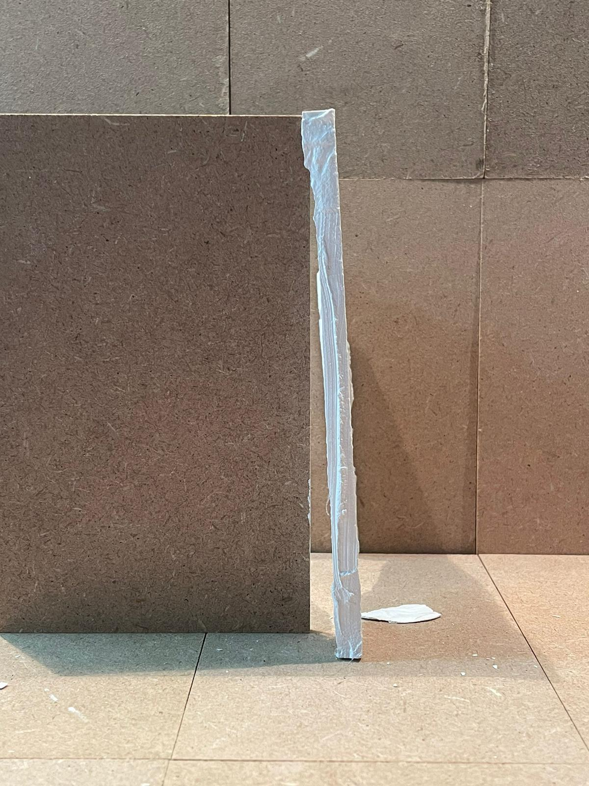

Een gedeelte van ons onderzoek bestond uit het ontwerpen en namaken van verschillende constructietypen voor op onze trilplaat. Na het maken van je eigen trilpaat, is het tijd om ook je eigen constructie te maken. Die je doormiddel van de trilplaat kan
testen op zijn aardbevingsbestendigheid. Doormiddel van dit artikel beschijven wij hoe we voor ons onderzoek de verschillende constructies hebben ontworpen, waar we tegen aan liepen en de ervaring die we hebben opgedaan tijdens ons
onderzoek. Omdat de situatie voor iedereen anders is en daarmee dus ook de vereisten voor de constructies, is het belangrijk om dit artikel te zien als aanwijzingen in de goede richting. Het kan zijn dat resultaten afwijken van hoe
ze beschreven staan in dit artikel.
NOTITIE:
De stappen en aanwijzingen die worden beschreven en gegeven in het onderstaande artikel, zijn suggesties! Denk eerst aan eigen veiligheid voor het uitvoeren.
Introductie
Om gebouwen te onderzoeken op aardbevingsbestendigheid is het essentieel om te begrijpen welke gedeelte van een gebouw invloed heeft op zijn of haar aardbevingsbestendigheid. Zo moet er gezorgd worden voor een zo'n licht mogelijke constructie om de hoeveelheid
krachten tegen te gaan. De vloeren en muren van een gebouw zijn van belang bij aardbevingen, omdat ze stevigheid aan het gebouw geven. Maar tijdens ons onderzoek zijn we erachter gekomen dat onze trilplaat niet sterk genoeg was om
daadwerkelijk scheuren te maken in de muren.
Hierdoor hebben wij gekozen om ons onderzoek vooral te richten op de constructie van een gebouw. Omdat, de constructie uiteindelijk verantwoordelijk is om alle krachten, die vrijkomen bij aardbevingen, op te vangen. De scheuren in vloeren en / of de muren, is alleen een gevolg van energieoverdracht vanuit de grond naar de constructie naar de muren. In het hieronder beschreven practicum gaan we ons dus grotendeels concentreren op de constructie. Bij gips zijn we juist wel gaan kijken naar de muren, maar de nadelen daarvan worden later besproken.
Hierdoor hebben wij gekozen om ons onderzoek vooral te richten op de constructie van een gebouw. Omdat, de constructie uiteindelijk verantwoordelijk is om alle krachten, die vrijkomen bij aardbevingen, op te vangen. De scheuren in vloeren en / of de muren, is alleen een gevolg van energieoverdracht vanuit de grond naar de constructie naar de muren. In het hieronder beschreven practicum gaan we ons dus grotendeels concentreren op de constructie. Bij gips zijn we juist wel gaan kijken naar de muren, maar de nadelen daarvan worden later besproken.
Materiaallijst
De volgende materialen zijn suggesties, afwijken is mogelijk.
- 1x Model gips 1
- Meerdere Gips gietvormen 2
- Meerdere Sateprikkers 3
- 1x Diverse gewichten
- meerdere Stevige plankjes die kunnen dienen als vloer
- 1x Lijm, lijmpistool, touw of plakband 4
- 1x Pen & Papier
- 1x Kartonnen vel 30 x 30cm
1 Uitgaand van het feit dat je ook constructies wil maken van gips
2 Gips is na het mengen in een vloeibare vorm, maar wordt erg sterk na enkele minuten. Zorg voor goede gietvormen die na het uitharden hergebruikt kunnen worden of in ieder geval makkelijk te verwijderen zijn.
3 Voorkeur zou uitgaan naar langere sateprikkers, zodat je meer ruimte hebt om te werken.
4 Een manier om de constructie aan elkaar te maken.

Afbeelding 1
Voorbeeld van modelgips
Constructie van hout
De makkelijkste manier om een constructie te maken is met hout. Hout is het makkelijkst verkrijgbaar en is goed te bewerken. Uitgaand van het feit dat je trilplaat niet al te sterk is, moet de constructie dus worden aangepast. Een eerste goede stap is
een goede vergelijking te maken tussen hoe sterk je trilplaat is en hoe sterk je constructie dan moet zijn. Wij zouden een constructie van satéprikkers aanraden, omdat deze toch sterkte geven maar niet heel veel kracht vereisen om
te bewegen. Je moet over hele precieze gereedschappen beschikken wil je houtenplanken zo dun krijgen dat ze worden beïnvloed door de kracht van de trilplaat.
Er zijn verschillende constructies mogelijk, maar omdat onze materialen niet geschikt waren om alle mogelijkheden ook in het echt te maken. Hiermee bedoelen we de oplossingen die we hebben uitgewerkt in onze deelvragen. Daarom hebben we besloten om bij
de houtconstructie te onderzoeken wat het verschil is tussen de 3 verschillende constructies. Vierkanten, een verdieping, vierkanten met dwarsbuiging, een verdieping en een constructie met twee verdiepingen. Waarvan de eerste verdieping
een dwarsverbinding heeft en de bovenste niet.

Afbeelding 2
De verschillende houtconstructies
Het maken van de constructie is vrij simpel, je legt in het geval van de sateprikkers, de sateprikkers overelkaar, gaat er met het lijmpistool overheen. Je laat het even drogen, 30 seconden max. Daarna haal je het voorzichtig van de ondergrond af, en
legt het op een ondervlak van ander papier, een krant of tijdschrift bijvoorbeeld om het verder te laten uitharden. Eventuele onzuiverheden kan je verbeteren met plakband of een nieuwe laag lijm. Het gaat hier niet om de mooiheid,
maar om de stevigheid. Verdiepingen kan je maken door stevigere plankjes op je constructie te leggen en deze indien nodig vast te maken aan de constructie, dit kan je doen doormiddel van een lijmpistool, of door een paar goed geplaatste
plakbandjes. Het is hierbij belangrijk dat de constructie ongeveer bij elke poging hetzelfde wordt, iets van afmetingen gebruiken is daarom erg handig. Zo voorkom je latere problemen als je het aan elkaar moet maken. Wijzelf hebben
gebruik gemaakt van een kartonnen doosje om onze constructieonderdelen aan elkaar te maken.

Afbeelding 3
Onze houten constructie
Wanneer je tevreden bent met je constructie kan je het vast maken aan de trilplaat. Het is hierbij van belang dat je kiest voor een niet te dempend medium tussen de trilplaat en de constructie. Wijzelf hebben een kartonnenplaat op maat geknipt, waarin
we de constructie vast konden zetten. Hierdoor worden de trillingen niet gedempt maar kan je wel de constructie goed vastzetten op de trilplaat. Waarschijnlijk zal de trilplaat weinig effect hebben op je constructie. Dat is natuurlijk
niet raar, want je constructie is (waarschijnlijk) erg licht. Als dat het geval is kan je meteen zien waarom dit de beste oplossing is. Hoe lichter de constructie hoe minder krachten erop uitgeoefend worden tijdens een aardbeving.
Maar, we willen natuurlijk wel wat trillingen zien. Dit kan je doen door langzaam het gewicht toe te laten nemen, door bijvoorbeeld zwaardere vloeren erin te leggen, of gewichten op de vloeren vast te maken. Zorg ervoor dat deze gewichten
goed vastzitten aan de vloer, anders trillen ze van je plateau af. Zorg ervoor dat je constructie goed vast zit, anders dan is er een kans dat het wegtrilt, zoals hieronder. Woeps 😅.
De dingen waarop je wil letten tijdens het testen zijn als volgt: De manier waarop de constructie beweegt. Hieraan kan je zien op welke manier de constructie de energie afgeeft. Ook is het interessant om te bekijken in welke mate de constructie meebeweegt.
Hoe erg buigt, bij hout verwacht je veel meer buiging dan bij een gipsen constructie. Een voorbeeld van die buiging is goed te zien in afbeelding 4.

Afbeelding 4
De buiging van hout
Constructie van gips
Aan het begin van ons onderzoek hebben we ons eerst gefocust op het bouwen van een constructie van gips. We hebben hiervoor gebruik gemaakt van gips dat de lokale bouwmarkt had, maar dat bleek al snel een mindere zet te zijn geweest. We bleken namelijk
niet de juiste materialen te hebben om goede vormen te maken van gips. Waardoor we al snel zijn overgestapt op een houten constructie. We hebben wel een paar tips van hoe het wel moet, en hoe het niet moet. Een belangrijke tip voordat
je gaat beginnen. Het is extreem moeilijk om het gips zo dun te krijgen dat de kracht van de trilplaat groot genoeg is om ook echt wat van invloed te hebben. Daarnaast is het aan elkaar maken van gips veel moeilijker als bij hout.
Om gipsen vormen te maken is het belangrijk om een goede mal te maken. Wij hebben gebruik gemaakt van een bakvorm, wij hebben die vorm toen gemaakt in een bakvorm. Die ingepakt met verpakkingsfolie, zodat het gips niet zou blijven plakken aan de vorm
en we zo dus, in theorie, goede wanden zouden krijgen. Doormiddel van plankjes hadden we toen afbakeningen gemaakt. We hebben het gips in de vorm gegoten, en toen kwamen we erachter dat we de wanden niet strak genoeg hadden aangedrukt.
Of niet strak genoeg kregen, waardoor uiteindelijk alle muurtjes in elkaar overliepen... Let dus goed op, dat je een stevige vorm gebruikt. Zorg er ook voor dat je de wanden goed aandrukt met gips. Want gips wil nog wel eens luchtbellen
maken en dan krijg je geen mooie wanden.

Afbeelding 5
Een goede muur

Afbeelding 6
Een slechte muur

Afbeelding 7
Overvloed door gips

Afbeelding 8
Zorg voor een dunne muur
Uiteindelijk bleek de constructie die we hadden gemaakt van gips veel te sterk, waardoor er niets mee gebeurde. Enorm teleurstellend, want er zat veel moeite in. Enorm belangrijk is dus een goede voorbereiding en de juiste materialen, want zelfs met heel
veel motivatie blijft gips enorm lastig om in goede vormen te krijgen, zonder de juiste spullen.